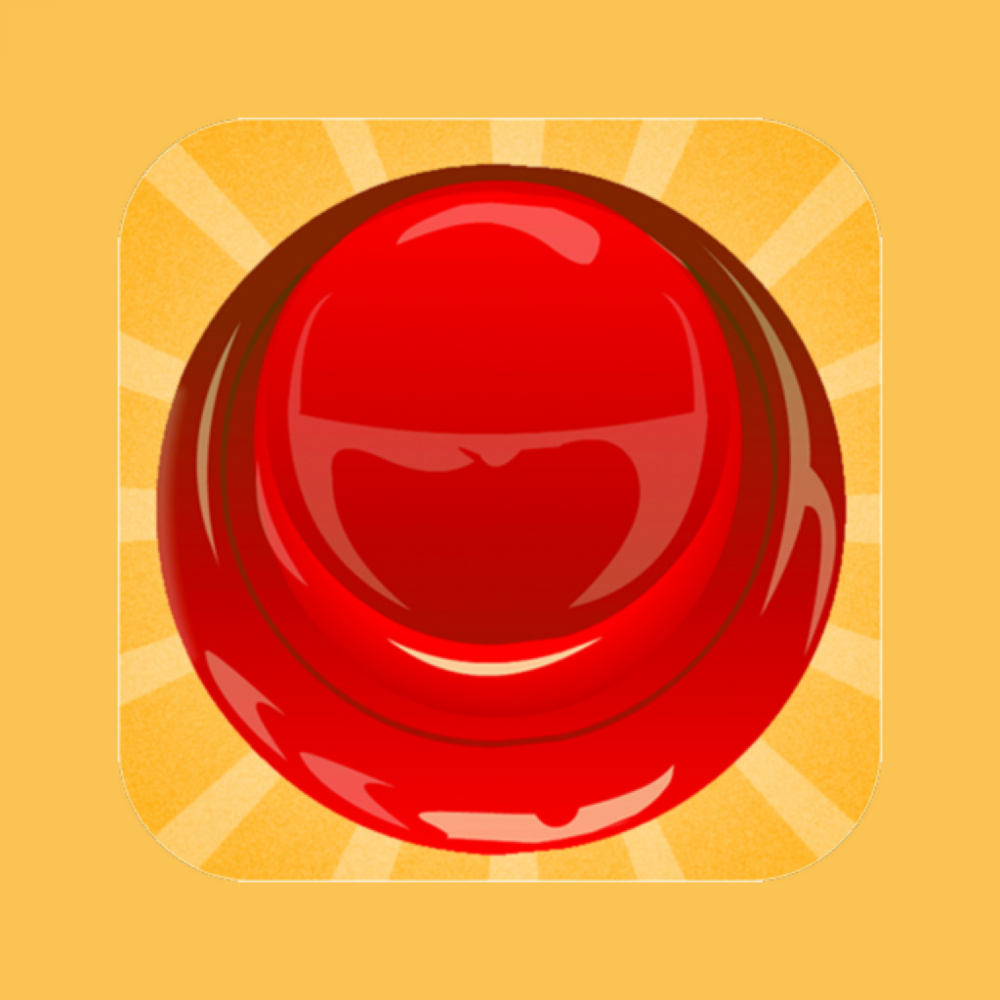

Sonidos de memes divertidos
Explora una coleccion de sonidos de reaccion, clasicos de internet y efectos cotidianos faciles de reproducir y compartir.

MyInstants es una rapida botonera de memes para sonidos de reaccion, clips divertidos y botones clasicos. Reproduce sonidos al instante, encuentra tus favoritos y comparte clips en segundos.
Explora una coleccion de sonidos de reaccion, clasicos de internet y efectos cotidianos faciles de reproducir y compartir.
En iPhone y Android, la experiencia incluye reproduccion instantanea, categorias, favoritos, busqueda y compartir rapidamente.
Esta es la pagina oficial de MyInstants para descargas moviles, enlaces de soporte y politicas.
MyInstants Soundboard Buttons es una aplicacion movil de sonidos de memes creada para una reproduccion rapida y repetible. Ofrece botones de sonido, audio de reaccion, categorias con busqueda, favoritos y herramientas para compartir.
Estamos preparando una beta de Windows para reproducir clips de sonido durante juegos y llamadas. Sigue en pruebas y aun no esta disponible para descargar.
Si. MyInstants se puede descargar gratis en iPhone y Android.
Puedes reproducir botones de sonido, explorar categorias, buscar sonidos, guardar favoritos y compartir clips.
Usa los enlaces de Privacidad y Terminos que aparecen arriba o abajo de esta pagina.
Elige tu plataforma e instala la aplicacion oficial MyInstants Soundboard Buttons.